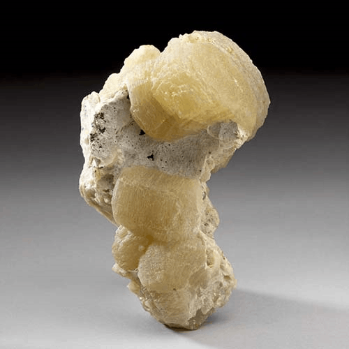
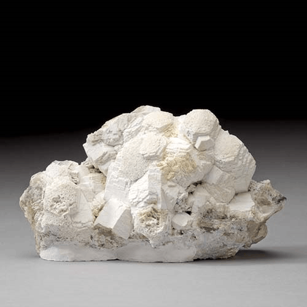
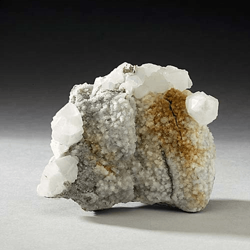

Witherite - BaCO3
Carbonates




Habit: Colorless to milky white or gray; also tinted yellow, brown or green. Crystals always twinned, most commonly in pseudo-hexagonal trillings that are bipyramidal, and also short prismatic, tabular to lenticular; also globular, botryoidal, granular or coarse fibrous. Vitreous luster, resinous on fractures; transparent to translucent. White streak.
Environment: Usually occurs in small amounts in low-temperature hydrothermal veins, typically as an alteration product of barite.
Etymology: Named after Dr. William Withering (1741-99), an English physician and mineralogist who first described the mineral.